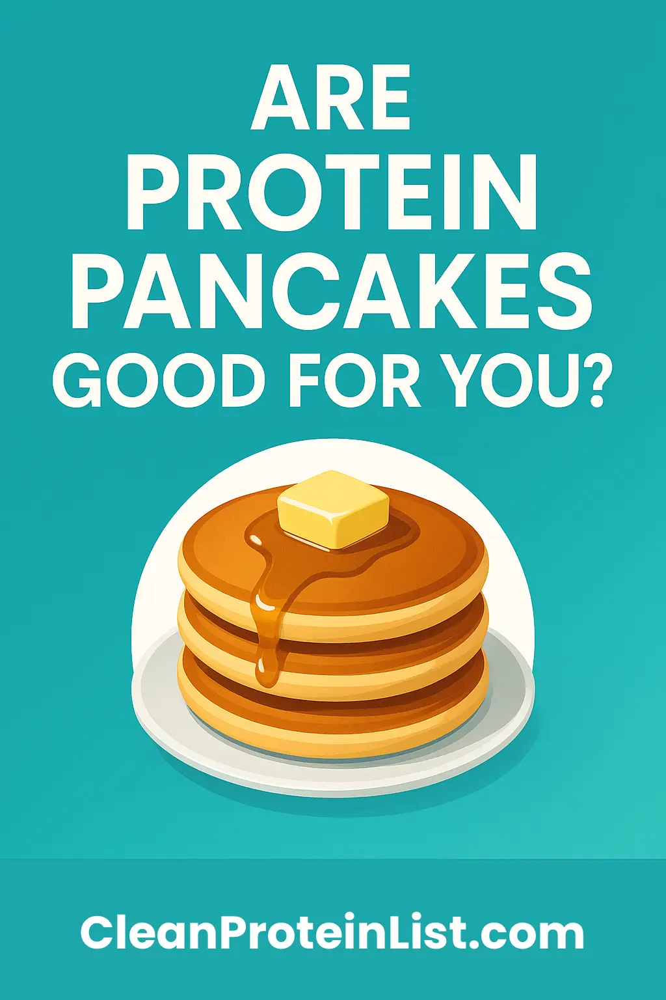

Protein Pancakes Without the Heavy Metals: Safe Mixes & Simple Recipe (2025)
Quick Answer: Yes, You Can Make Safe Protein Pancakes
Protein pancakes are only as safe as the powder you use. Heating protein powder in a pan does not create or destroy heavy metals – it just changes texture.
The real risk is hidden lead, cadmium, and arsenic in the protein itself. That’s why we recommend using ONLY verified-safe powders when you’re eating them daily.
- ✅ Safest overall (whey): MuscleTech 100% Mass Gainer (#1 CR ranking, lead not detected)
- ✅ Premium lean whey: Dymatize ISO 100 (below-detection lead, dual verified)
- ✅ Budget whey: Body Fortress Super Advanced Whey (Clean Label certified, ~$0.67/serving)
- 🌱 Vegan option: OWYN Pro Elite (only plant protein CR verified safe)
Below: a 5-minute pancake recipe, plus which powders to use (and avoid).
📋 Table of Contents
Why Your Protein Choice Matters More Than the Recipe
Most protein pancake recipes obsess over whether you use oats vs. flour, egg whites vs. whole eggs… but completely ignore heavy metals.
Here’s the uncomfortable truth:
- Cooking does not remove lead, cadmium, or arsenic. Heat changes protein structure (denatures it) but heavy metals stay put.
- If your powder is contaminated, your pancakes are contaminated. Fluffier batter doesn’t fix that.
- Plant proteins are the worst offenders. In 2025 testing, plant-based powders like Naked Nutrition Vegan Mass Gainer and Huel Black showed extreme lead levels, while top whey products like MuscleTech had lead not detected.
⚠️ Daily Pancakes = Daily Exposure
If you eat protein pancakes 4–7 days per week, your powder needs to be in the verified-safe category, not “probably fine.â€
That’s why we recommend brands that scored best in independent testing and are featured in our Lead-Free Protein Brands Ranked (2025) database.
Simple Lead-Aware Protein Pancake Recipe (5 Minutes)
This is a flexible base recipe you can tweak depending on your macros. It uses vanilla whey for best texture and taste.
Ingredients (1 Serving / ~3 Medium Pancakes)
- 🥛 1/3–1/2 cup milk (dairy or oat/almond)
- 🥚 1 whole egg (or 2 egg whites)
- 🥣 1 scoop (25–30g) safe vanilla whey protein
Good options: MuscleTech, Dymatize, Body Fortress, Optimum Nutrition Gold Standard - 🌾 1/3 cup rolled oats (or 1/4 cup oat flour)
- 🧁 1/4 tsp baking powder (for fluffiness)
- 🧂 Pinch of salt + optional sweetener (stevia, maple syrup, etc.)
- 🥄 Optional: 1/4 mashed banana or 1 tbsp Greek yogurt for extra moisture
Instructions
- Blend the batter. Add all ingredients to a blender and blend until smooth. Let sit 1–2 minutes to slightly thicken.
- Preheat your pan. Lightly oil a nonstick pan on medium-low heat. Protein burns faster than flour, so don’t crank the heat.
- Cook small pancakes. Pour small circles (2–3 tbsp each). Cook 1–2 minutes until bubbles appear and edges look set, then flip and cook another 30–60 seconds.
- Serve with smart toppings. Add berries, a little maple syrup, or Greek yogurt (see ideas below).
Recipe Macros (Approximate)
Using 1 scoop whey, 1 egg, 1/3 cup oats, and 1/3 cup 2% milk:
- Calories: ~350–380
- Protein: ~30–35g
- Carbs: ~30–35g
- Fat: ~10–12g
Perfect as a high-protein breakfast or post-workout meal.
Best Protein Powders for Pancakes (By Goal)
These recommendations assume you’ll eat pancakes regularly and want minimal heavy metal exposure, not just “good flavor.â€
1. For Bulking: MuscleTech 100% Mass Gainer
MuscleTech 100% Mass Gainer
Why it works for pancakes:
- Lead not detected in Consumer Reports 2025 testing
- High calories: great if you want a 600–800 calorie pancake stack
- Whey-based = naturally cleaner than plant proteins
How to use: Swap your usual whey scoop for 1/2–1 scoop of MuscleTech in the recipe above. You may need a little extra liquid because mass gainers are thicker.
See full MuscleTech safety analysis →2. For Lean Protein: Dymatize ISO 100
Dymatize ISO 100 Hydrolyzed Whey
Why it works for pancakes:
- Lead below detection limits + Clean Label verification
- Very low carbs & fat → you control carbs via oats/fruit
- Thin, smooth batter texture, even at higher protein doses
Perfect if you want high protein without turning breakfast into a bulking meal.
Read Dymatize safety article →3. For Budget Pancakes: Body Fortress Super Advanced Whey
Body Fortress Super Advanced Whey
Why it works for pancakes:
- Clean Label certified with non-detectable lead
- Roughly <$1 per high-protein pancake meal
- Easy to find at Walmart and big-box retailers
If you want safe pancakes on a tight budget, this is the go-to option.
Body Fortress safety breakdown →Plant-Based & Vegan Protein Pancakes (Without the Scary Metals)
Here’s where things get tricky. In 2025 testing, most plant-based proteins performed poorly for lead and cadmium. Naked Nutrition Vegan Mass Gainer and Huel Black, for example, showed extreme contamination.
🚫 Avoid These in Daily Pancakes
- Naked Nutrition Vegan Mass Gainer – #23 worst, 1,572% over safe lead limit
- Huel Black Edition – very high lead per serving
- Unverified pea + rice blends with no heavy-metal testing published
Safer Vegan Option: OWYN Pro Elite
OWYN Pro Elite is the only plant protein Consumer Reports verified with lead below detection limits.
How to adapt the pancake recipe for vegan/gluten-free:
- Swap whey protein → 1 scoop OWYN powder
- Swap egg → 1 tbsp ground flax + 3 tbsp water (flax egg) OR commercial egg replacer
- Use gluten-free oats or oat flour
- Use plant milk (oat, soy, or almond)
Texture note: Vegan protein pancakes tend to be denser. Start with more liquid than whey-based recipes and cook at slightly lower heat to prevent rubbery edges.
🍫 What About Chocolate Vegan Pancakes?
Chocolate + plant protein = double contamination risk (cocoa cadmium + soil lead). If you’re going to do chocolate, use it occasionally, not as a daily breakfast, and only with a tested-safe brand.
For a deeper dive, see: Are Chocolate Protein Powders More Contaminated with Lead?
Toppings, Macros & Example Meal Ideas
Once your base recipe is safe, the fun part is toppings. Here’s how to build a plate that matches your goals.
For Fat Loss / Recomp
- Use whey or Dymatize ISO 100
- Top with:
- Fresh berries
- 0–1 tsp real maple syrup or sugar-free syrup
- 1–2 tbsp Greek yogurt
- Target: ~350–450 calories, 30–40g protein
For Muscle Gain / Maintenance
- Use regular whey or a mix of whey + MuscleTech Mass Gainer
- Top with:
- 1 sliced banana
- 1–2 tbsp peanut butter or almond butter
- Drizzle of honey or maple syrup
- Target: 500–800 calories, 35–50g protein
For Hardgainers / High-Performance Athletes
- Base: MuscleTech Mass Gainer pancakes (half serving baked into pancakes)
- Toppings:
- Banana + peanut butter
- Greek yogurt or cottage cheese
- Honey or jam
- Target: 700–1,000+ calories from one plate
FAQ: Cooking With Protein Powder & Heavy Metals
Does cooking protein powder make it toxic?
No. Heating protein powder denatures the protein (like cooking an egg), but it doesn’t create lead or other heavy metals. If the protein is contaminated, it’s contaminated whether you drink it cold or cook it in a pancake.
Can I just “cycle†my contaminated protein and be fine?
Not a great plan. Heavy metals like lead and cadmium accumulate in bone and tissue over time. If your daily breakfast and post-workout shake are both coming from contaminated powders, cycling a bit won’t fix the core problem.
Is it better to eat protein pancakes than drink a shake?
For heavy metal exposure, it doesn’t matter. The exposure depends on the powder, not the format. From a nutrition standpoint, pancakes can be better if you add fiber (oats) and whole-food toppings instead of just drinking liquid calories.
How do I know if my protein is safe for daily pancakes?
Step 1: Check if it appears in independent testing (Consumer Reports, Clean Label Project). Step 2: See where it ranks in our Lead-Free Protein Brands Ranked (2025) database. Step 3: If it’s untested and plant-based, assume higher risk.
What if I’ve been using a contaminated brand in pancakes for months?
Don’t panic, but don’t ignore it either. Stop using the brand, switch to a verified-safe product, and consider talking with your doctor about blood lead testing—especially if you’ve also had other sources of exposure or have symptoms like fatigue, brain fog, or headaches.
The Bottom Line: Your Pancakes Can Be Safe and Delicious
Key Takeaways:
- 🥉ž Protein pancakes themselves are not the issue — the protein powder is.
- ⚠️ Cooking does not remove lead or cadmium from contaminated brands.
- ✅ Whey-based products like MuscleTech, Dymatize, Body Fortress, ON Gold performed far better than most plant powders in independent testing.
- 🌱 For vegan pancakes, OWYN Pro Elite is the only plant protein Consumer Reports verified as safe.
- 📊 You can check where your favorite brand ranks in our complete testing list.
Your Next 3 Steps:
- Stop using untested or high-lead brands in your daily pancakes.
- Pick a verified-safe powder from our top list and plug it into the simple recipe above.
- Use our quiz to match your goals (bulk, cut, vegan, budget) to the right safe brand.
You don’t have to give up pancakes — just the contaminated protein hiding inside them.
🔎 Not Sure Which Protein to Use in Your Pancakes?
Take our 60-second quiz to see which verified-safe protein powder fits your goals, budget, and diet — then drop it straight into this pancake recipe.
Find Your Safe Protein →Sources:
- Consumer Reports, “Protein Powders and Shakes Contain High Levels of Lead,†October 2025 – 23 products tested for heavy metals.
- Clean Label Project, “Protein Powder Heavy Metals†testing and Clean Label certifications.
- California OEHHA, Proposition 65 safe harbor levels for lead and other heavy metals.